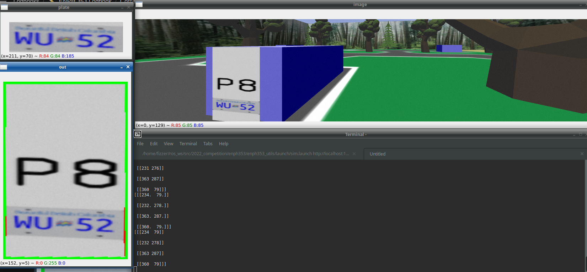
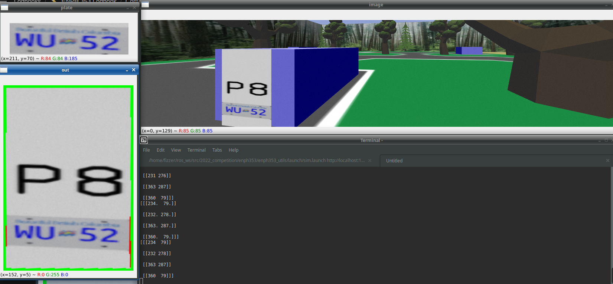

Engineering Physics Robot Competition
Key Concepts and Tools Used
- Circuit prototyping
- Mechanical prototyping
- System integration
- Team collaboration
Description
Over the course of the summer of 2022 I worked in a group of 4 to design, build, and program a robot from scratch. This robot would then compete in a competition to acquire plastic idols along the course. The course consisted of 3 sections, line following, IR tracking, and ziplines. Almost every part of the robot was manufactured in the lab using a variety of tools such as a laser cutter, lathe, milling machine and 3D printer. The robot was controlled using a STM32 Bluepill, along with several other circuits that constructed by my teammates and I. Several circuits required extensive testing and troubleshooting using an oscilloscope to identify faulty signals. Upon completing the necassary circuits, I wrote firmware used to detect idols along the course using sonar sensing, and control linear robot arm and claws to reach and grab the idol. Integration of the subsystems, such as the robot arm, was by far the most challenging part of the competition, consuming full days of work to test and implement simple features. Nonetheless, our team placed fourth in the competition, despite being down a team member for more than half of the build time.
 
